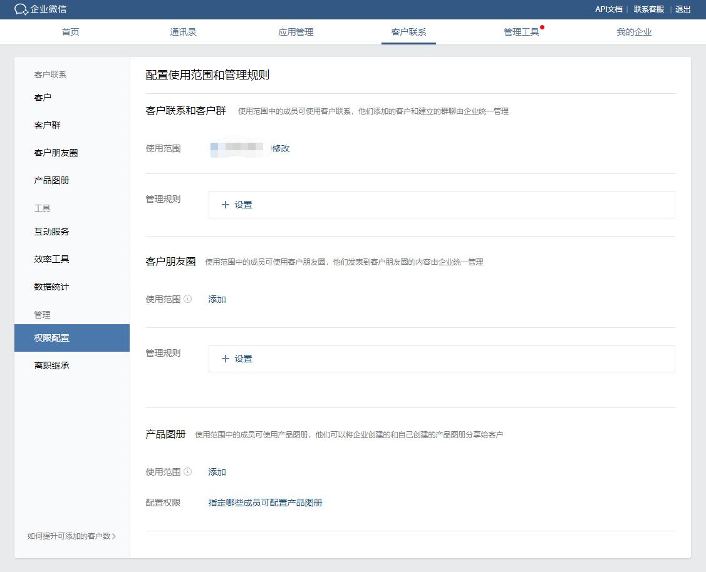
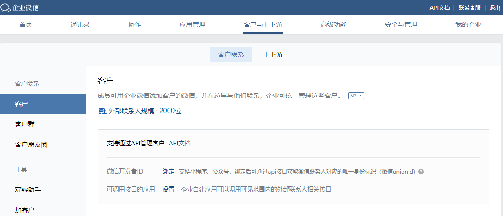

目录
企业内的员工可以添加外部企业的联系人进行工作沟通，外部联系人分为企业微信联系人和微信联系人两种类型。
配置了客户联系功能的成员所添加的外部联系人为企业客户。
开始开发
配置可使用客户联系功能的成员
进入“客户联系”-“权限配置”-“使用范围”页面，管理员设置哪些人可使用联系客户功能，如未配置，则无法调用后文提到的相关接口。

配置可使用客户联系接口的应用
如需使用自建应用调用外部联系人相关的接口，需要在“可调用接口的应用”中进行配置。

使用客户联系相关接口
企业通过配置过权限的应用调用外部联系人选人相关接口，如：获取成员选择的外部联系人的userid以及通过该userid获取外部联系人详情。（ 外部联系人选人接口 | 获取外部联系人详情）
同时我们提供了jsapi接口和小程序接口，方便员工在企业的应用里能够快捷打开外部联系人的个人信息页以及打开聊天窗口。

关于ExternalUserId
ExternalUserId是企业微信外部联系人的标识，但需要开发者(尤其是第三方开发者)注意的是，对于同一个外部联系人，不同调用方（企业/第三方服务商）获取到的ExternalUserId是不同的。
关于客户群ID
企业微信为每个客户群生成唯一的ID（chat_id），同样需要注意的是，对于同一个群，不同调用方（企业/第三方服务商）获取到的chat_id是不同的
接口调整说明
接口调整说明 2025/11/18
为更好地支持企业微信生态中营销获客类应用的发展，满足合作伙伴的获客需求，并持续保障企业客户数据的安全与合规，企业微信将于 2025年12月18日对客户联系等接口进行以下调整：
- 服务商应用获取客户列表、客户详情等接口：
- 应用试用期内，仅可获取授权前一个月及试用期新增的客户信息；
- 当应用在企业下活跃度较低时，将提前通过回调通知应用。若一周后活跃度仍较低，应用将仅可获取活跃员工的客户信息；
- 当企业长期未使用应用时，将提前通过回调通知应用。若一周后仍未使用，应用将无法获取企业的客户信息；
- 当应用在企业下为成员授权使用时，仅可获取已使用应用成员的客户信息。
- 代开发应用获取客户详情接口：不再返回客户头像、性别及员工备注的手机号。
具体调整详情请参阅官方文档：客户联系接口调整说明
接口调整说明 2019/08/07
为保护客户的隐私，企业微信将对“获取客户详情”接口进行调整，8月15日起，第三方应用将不再能通过此接口获取成员对客户备注的手机号码。
接口调整说明 2019/05/23
为使API的请求URL表述与企业微信逐步丰富的外部联系人管理能力相符合，现对部分API的URL命名进行调整，请开发者使用新的URL进行调用，原URL仍可正常使用。
相关变更如下:
| API名称 | 旧请求URL | 新请求URL |
|---|---|---|
| 获取客户列表 | /cgi-bin/crm/get_external_contact_list | /cgi-bin/externalcontact/list （注意：返回的字段customer_contacts变为follow_user，如果通过旧的URL请求则返回旧的字段名） |
| 获取配置了客户联系功能的成员列表 | /cgi-bin/crm/get_customer_contacts | /cgi-bin/externalcontact/get_follow_user_list |
| 获取客户详情 | /cgi-bin/crm/get_external_contact | /cgi-bin/externalcontact/get |
| 配置客户联系「联系我」方式 | /cgi-bin/crm/*_contact_way | /cgi-bin/externalcontact/*_contact_way |
| 添加企业群发消息模板 | /cgi-bin/crm/add_msg_template | /cgi-bin/externalcontact/add_msg_template |
| 获取企业群发消息发送结果 | /cgi-bin/crm/get_group_msg_result | /cgi-bin/externalcontact/get_group_msg_result |
| 获取员工行为数据 | /cgi-bin/crm/get_user_behavior_data | /cgi-bin/externalcontact/get_user_behavior_data |
| 获取离职成员的客户列表 | /cgi-bin/crm/get_unassigned_list | /cgi-bin/externalcontact/get_unassigned_list |
| 离职成员的外部联系人再分配 | /cgi-bin/crm/transfer_external_contact | /cgi-bin/externalcontact/transfer |
接口调整说明 2018/12/21
企业微信管理端的“外部联系人”标签将替换为“客户联系”，原先该页面下的“员工对外信息展示”（对外信息设置接口）功能将移动至“我的企业”-“通讯录管理”下。
同时，相关的JSAPI、小程序以及API接口也将有较大变更。相关变更将在2019年1月7日 00:00 生效，请各位企业开发者尽快做好调整。
变更的接口如下：
| 接口类型 | 接口名称 | 变更内容 |
|---|---|---|
| API | 离职成员的客户再分配 | 接收的成员必须配置了客户联系功能 |
| JSAPI | 外部联系人选人接口 | 仅配置了客户联系功能的成员才可调用 |
| JSAPI | 获取当前外部联系人userid | 仅配置了客户联系功能的成员才可调用 |
| 小程序 | 打开外部联系人列表选人 | 仅配置了客户联系功能的成员才可调用 |
| 小程序 | 获取当前外部联系人userid | 仅配置了客户联系功能的成员才可调用 |
此外，企业微信新增了“获取客户列表”接口。